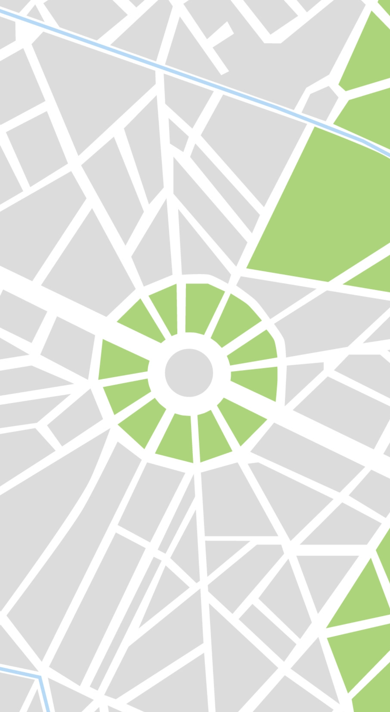

 <ion-header>
  <ion-toolbar [ngClass]="{'header-default': !esEspecial, 'header-especial': esEspecial}">
    <div class="button-container">
      
      <ion-buttons slot="start">
        <ion-button class="return-btn" [routerLink]="returnLink">
          <div class="container-icon">
            <ion-icon src="assets/icons/union-2.svg"></ion-icon>
          </div>
        </ion-button>
      </ion-buttons>

      <p> Mapa</p>
    </div>

    <ion-button class="filtro-btn" routerLink="/filtro-punto-de-interes">
      <ion-icon src="assets/icons/filter-edit-svgrepo-com.svg" class="icono-filtro"></ion-icon>
      <span>Filtros</span>
    </ion-button>
  </ion-toolbar>
</ion-header> 

<ion-content [fullscreen]="true">


  <div>
    
    </div>

    <div>
      
      </div>

      <div>
        
        </div>
        
        <div>
          
          </div>

          <div>
            
            </div>

  


 
</ion-content>
